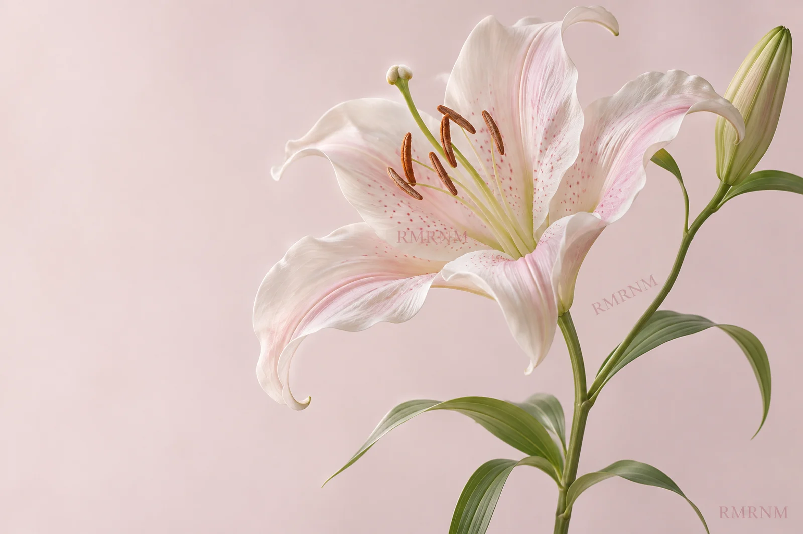

Выбор студии

Цветочная студия «лилия»
Нежность,
которую можно
подарить.
Воздушные букеты, естественные оттенки
и немного волшебства в обычном дне.
У каждого чувства — свой цветок
Выберите свою нежность
Нежная классика
Сезонная коллекция
Лёгкий и воздушный
Для ваших
особенных «просто».
Не обязательно ждать повода,
чтобы подарить кому-то тепло.
Каждый букет — маленькая история.
Наша философия
Пусть говорят
цветы.
Нам близка естественная красота: чуть изогнутый стебель, раскрывающийся бутон, неповторимый оттенок лепестка.
Мы придумали «лилию» как место, где можно замедлиться, прислушаться к себе и выбрать букет, который скажет всё за вас.
Познакомиться со студией- 01
Свежий срез
Подрежьте стебли чистым острым инструментом перед тем, как поставить букет в вазу.
- 02
Чистая вода
Уберите листья ниже уровня воды. Регулярно меняйте воду и мойте вазу.
- 03
Тихое место
Выберите прохладное место вдали от батарей и прямого солнца.